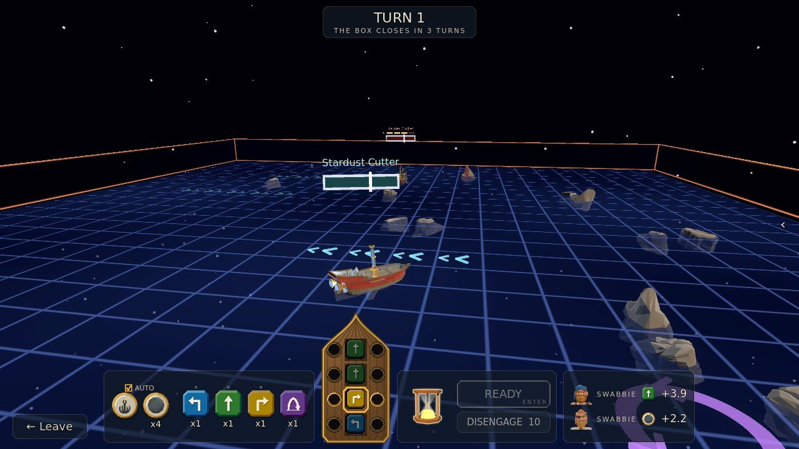
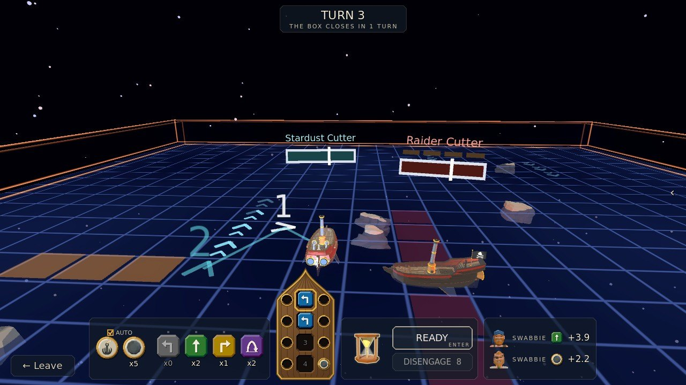
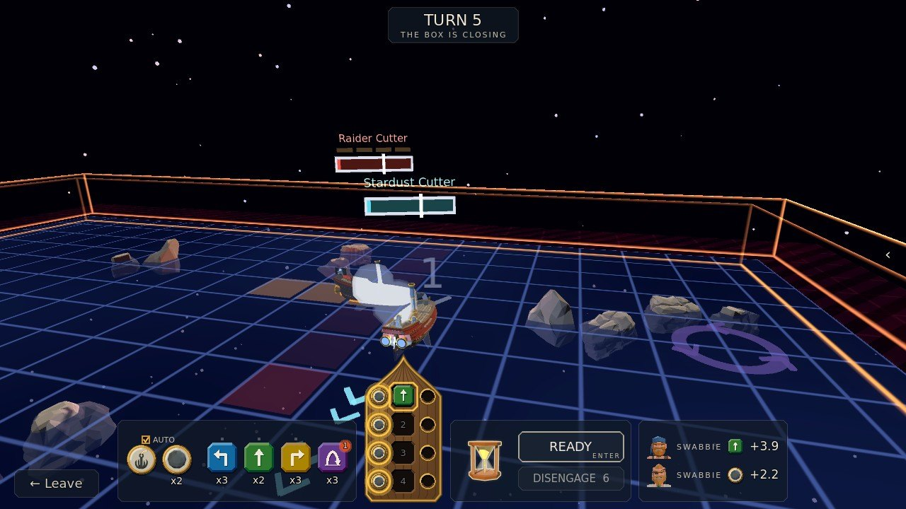
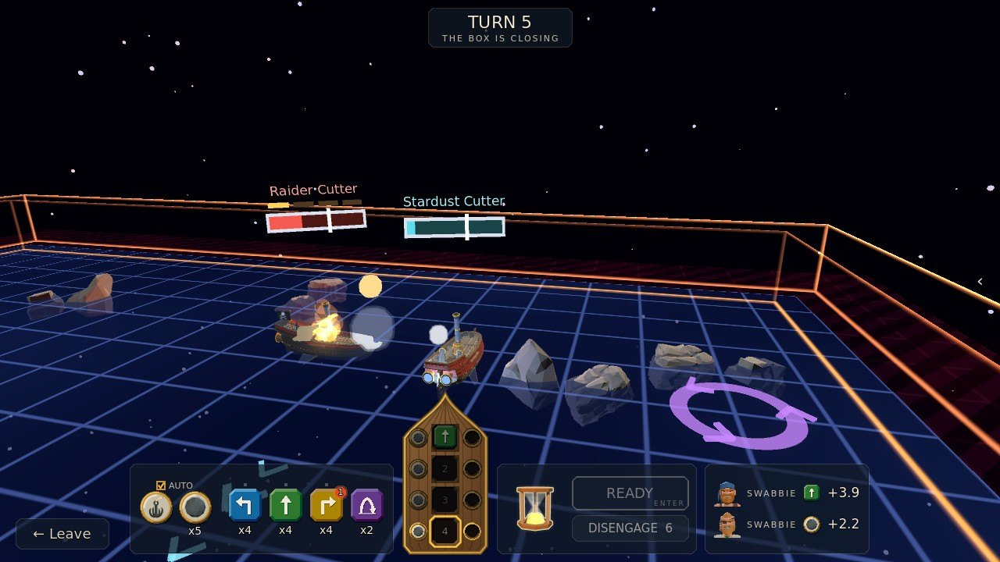
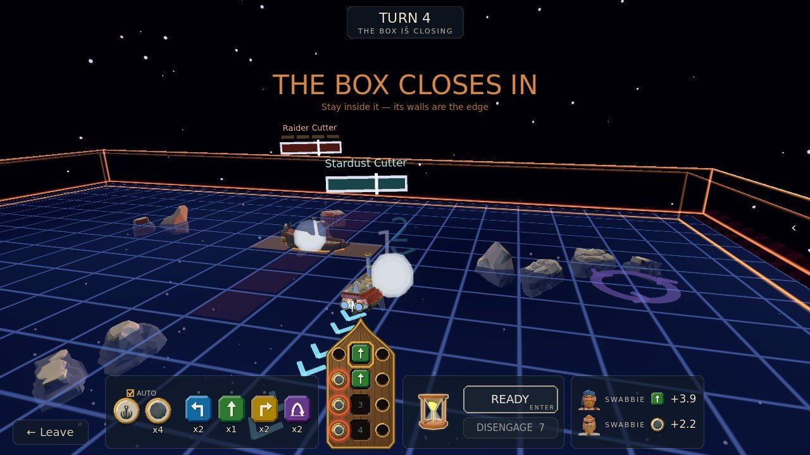
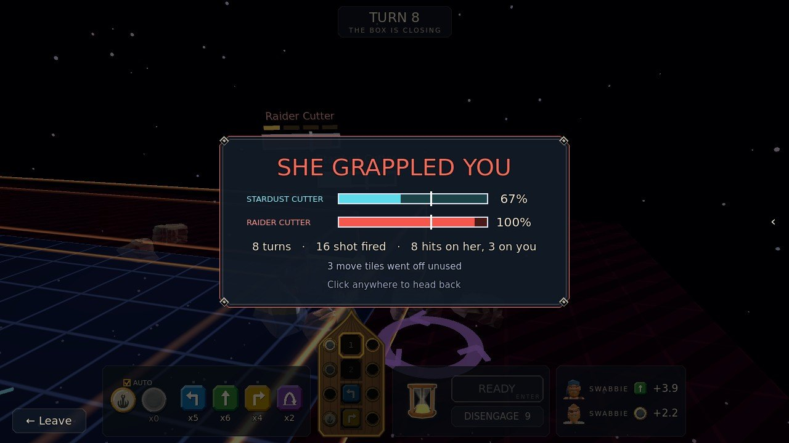

Space Battle
Plan four moves and your guns at the table while the raider plans hers, then watch both play out on the grid.
Step by step
-

1Your ship's table2Move tiles3Ready1Your ship's table2Move tiles3Ready Step 1Plan four moves
The table at the foot of the screen is your ship, bow up, with a well for each of the turn's four phases down her keel. Click a move tile to lay it in the lit well, or drag it to any well (W A D on the keyboard). Forward sails one square; left or right sails one forward and one to that side, and turns you. Press Ready (Space), or the glass runs out and whatever you planned sails. The raider plans at the same moment, and you don't see her moves.
-

1Your plan2Your broadside3Her guns1Your plan2Your broadside3Her guns Step 2Read the board
As you plan, the board draws it: a numbered dart where each phase will leave you, an orange lane where each broadside you load will land, and red squares where her guns bear on you right now. Each phase plays out the same way: your move, then the stardust currents push you one square and the whirls swing you round, then the guns fire.
-

1Loaded ports2Where they fire1Loaded ports2Where they fire Step 3Load your guns
The ports down each side of the table are her guns; the ones on her left are her port guns. Click a gun-port to load a ball there (Q / E): it fires straight out of that side, three squares, in that phase. A port glows gold where she would be alongside, and red, with a gunsight, where she is in that broadside's lane, if she holds her course.
-

1Broadsides2A whirl1Broadsides2A whirl Step 4Watch it play out
With both plans in, the turn plays out phase by phase. Your gunners make the shot and your sailors make the moves (your crew sits on the right of the table). Damage you do buries her crew before any boarding starts, and the damage she does buries yours.
-

1Hop1Hop Step 5Hop, and mind the box
A hop (H) leaps her off the board for one phase: she keeps her square, and broadsides and grapples aimed at her that phase pass underneath, but in the air she can't fire or grapple. Her sailors make a hop only every other turn, so save it for the broadside you see coming. From turn 4 the box closes in, and the thin line shows where its wall will be next; its walls stop you and hurt.
-

1The tally1The tally Step 6Board, or be boarded
Drop the grapple (G) on a gun-port to throw a hook from that side: if she is right alongside after your move, it bites and you board her. She can do the same, and here she got her hook in first. You never run out of grapples, but no guns fire in a phase you throw one. You may disengage after 10 turns, and every ball that hits you adds 2 more.
The rules, as the game tells them
Plan four moves, then press Ready — or the glass runs out and whatever you planned sails. The raider plans at the same moment, and you do not see her moves.
Each phase: your move, then the stardust currents push one square and the whirls swing you round, then the guns fire. Forward sails one square; left or right sails one forward and one to that side, and turns you.
HOP leaps her off the board for one phase: she keeps her square, and broadsides and grapples aimed at her that phase pass underneath — but in the air she cannot fire or grapple. Her sailors make a hop only every other turn, so save it for the broadside you see coming.
The table is your ship, bow up: a well for each phase down her keel, and a gun-port on each side of it — the ports on her left are her port guns. Click a move tile to lay it in the lit well (or drag it to any well). Click a gun-port to load a ball there; guns fire straight out of that side, three squares.
Drop the GRAPPLE on a gun-port to throw a hook from that side: if she is right alongside after your move, it bites and you board her. You never run out of grapples, but no guns fire in a phase you throw one. A port glows gold where she would be alongside, red (with a gunsight) where she is in that broadside's lane — if she holds her course.
Your gunners make the shot and your sailors make the moves (the crew on the right of the table); a move tile you do not use goes off after five turns, and the dot over a tile picks the kind they make next. Damage you do buries her crew before the boarding starts — and the damage she does buries yours.
The box closes in from turn 4; the thin line shows where its wall will be next. Its walls stop you and hurt. You may disengage after 10 turns — every ball that hits you adds 2 more.
Moves: W A D or the D-pad. Hop: H or the left shoulder. Clear: S. Guns: Q / E or the triggers. Grapple: G.
Next phase: Tab. Ready: Space.
Look around: drag, or the right stick. Zoom: the wheel.
Word for word from the game: in play the same text sits behind the ? on the board, so this page cannot drift from it.